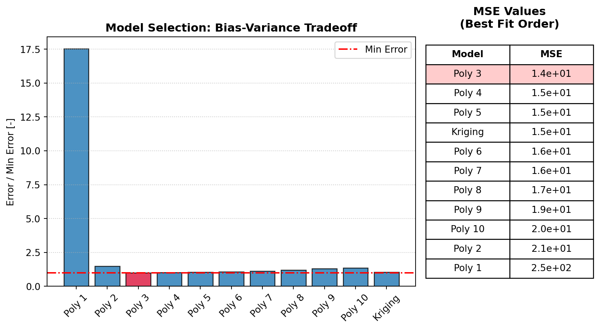
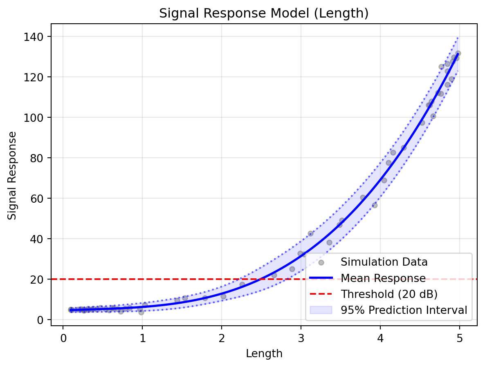
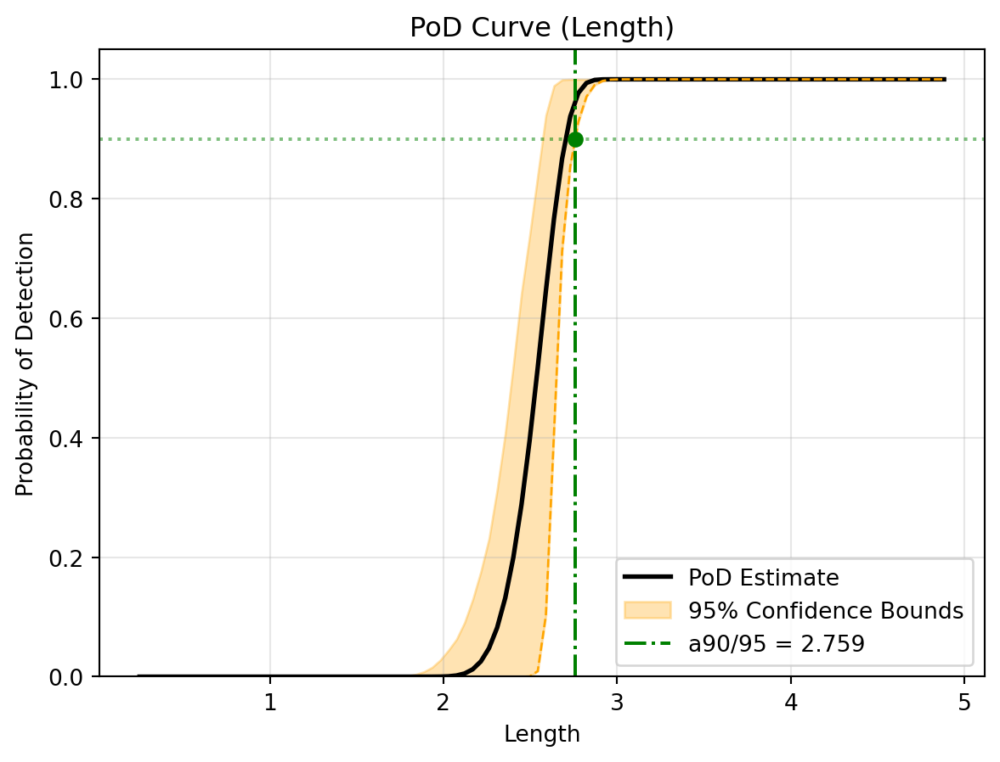

import sys
# A complex, non-linear physics model to trigger multiple optimisation loops
SOLVER_CMD = (
f"{sys.executable} -c "
"'import pandas as pd, numpy as np; "
'df=pd.read_csv("{input}"); '
'df["Signal"] = 5 + df["Length"] ** 3 + (df["Length"] * np.random.normal(0, 1, len(df))); '
'df.to_csv("{output}", index=False)\''
)Automated Optimisation
The optimise method allows you to run a complete “Active Learning” loop. DigiQual will generate an initial design, run your external solver, check the results, and automatically add new points where the model is weak.
Instead of writing for loops yourself, you define the problem and let digiqual drive.
How It Works Under the Hood
When you trigger the optimise method, DigiQual acts as an orchestrator for your simulation workflows. It performs the following steps:
- Initialisation: If you have no existing data, DigiQual generates an initial batch of input coordinates using Latin Hypercube Sampling (LHS) to ensure a good spread across your variable ranges.
- Execution: It writes these coordinates to a temporary CSV file and commands your external solver to run.
- Diagnostics (Sense): Once the results are back, DigiQual runs statistical checks. It looks for “gaps” in your input coverage and measures “model uncertainty” using a technique called Bootstrap Query-by-Committee.
- Refinement (Decide & Act): If the diagnostics fail, DigiQual generates targeted new samples exactly where the model needs them most (e.g., in the middle of an empty gap, or in highly uncertain regions) and repeats the loop.
Connecting Your External Solver
To automate this process, DigiQual needs to communicate with your external software (like MATLAB, Ansys, or a custom Python script). It does this using a simple file-based contract via a command string.
Your command string must contain two special placeholders: {input} and {output}.
{input}: DigiQual will replace this with the path to a CSV file it creates. This CSV contains the input variables for the current batch of simulations.{output}: DigiQual will replace this with the path where it expects your solver to save the final results as a CSV.
The “Wrapper” Concept
Most heavy physics solvers don’t natively read and write CSVs in exactly the way DigiQual expects. In real life, you will usually write a small “wrapper script” (e.g., run_my_model.py or run_my_model.bat). See Appendix for full examples python and MATLAB.
Your wrapper script’s job is to:
- Read the DigiQual
{input}CSV. - Modify your solver’s native input deck (e.g., updating parameters in an Ansys
.macfile). - Trigger the actual solver in headless/batch mode.
- Extract the results (e.g., the signal or stress value) from the solver’s output files.
- Save a clean CSV to the
{output}path with the original inputs and the new outcome column appended.
The Auto-Pilot Workflow
Let’s walk through setting up a complete optimisation loop.
1. Define a “Mock” Solver
For this tutorial, we will use a Python one-liner as our “solver” instead of a complex physics engine. We use python -c to run this as if it were an external Command Line Interface (CLI) tool.
Notice how the SOLVER_CMD utilises the {input} and {output} placeholders.
2. Configure the Study
We define our input variables and the ranges we want to explore.
from digiqual.core import SimulationStudy
# Define inputs ranges
ranges = {"Length": (0.0, 5.0), "Angle": (-45.0, 45.0)}
# Initialise
study = SimulationStudy(input_cols=["Length", "Angle"], outcome_col="Signal")3. Run Optimisation
This single command handles the entire Active Learning loop:
- Generates 20 initial LHS points (because
study.datais currently empty). - Runs the solver command, passing the temporary input and output file paths.
- Checks diagnostics to see if the data is sufficient.
- If needed, generates up to 10 new points targeting weak areas and repeats (up to 5 times).
study.optimise(
command=SOLVER_CMD,
ranges=ranges,
n_start=20, # Initial batch size
n_step=10, # Refinement batch size
max_iter=5, # Safety limit for the loop
)
=== STARTING ADAPTIVE OPTIMIZATION ===
--- Iteration 0: Generating Initial Design (20 points) ---
-> Executing: /Users/jt17630/Documents/DigiQual/.venv/bin/python3 -c 'import pandas as pd, numpy as np; df=pd.read_csv("sim_input.csv"); df["Signal"] = 5 + df["Length"] ** 3 + (df["Length"] * np.random.normal(0, 1, len(df))); df.to_csv("sim_output.csv", index=False)'
--- Iteration 1: Diagnostics Check ---
>> Model invalid. Refining design...
Diagnostics flagged issues. Initiating Active Learning...
-> Strategy: Exploitation (Targeting high uncertainty regions)
--- Running Batch 1 (10 points) ---
-> Executing: /Users/jt17630/Documents/DigiQual/.venv/bin/python3 -c 'import pandas as pd, numpy as np; df=pd.read_csv("sim_input.csv"); df["Signal"] = 5 + df["Length"] ** 3 + (df["Length"] * np.random.normal(0, 1, len(df))); df.to_csv("sim_output.csv", index=False)'
--- Iteration 2: Diagnostics Check ---
>> Model invalid. Refining design...
Diagnostics flagged issues. Initiating Active Learning...
-> Strategy: Exploitation (Targeting high uncertainty regions)
--- Running Batch 2 (10 points) ---
-> Executing: /Users/jt17630/Documents/DigiQual/.venv/bin/python3 -c 'import pandas as pd, numpy as np; df=pd.read_csv("sim_input.csv"); df["Signal"] = 5 + df["Length"] ** 3 + (df["Length"] * np.random.normal(0, 1, len(df))); df.to_csv("sim_output.csv", index=False)'
--- Iteration 3: Diagnostics Check ---
>> Model invalid. Refining design...
Diagnostics flagged issues. Initiating Active Learning...
-> Strategy: Exploitation (Targeting high uncertainty regions)
--- Running Batch 3 (10 points) ---
-> Executing: /Users/jt17630/Documents/DigiQual/.venv/bin/python3 -c 'import pandas as pd, numpy as np; df=pd.read_csv("sim_input.csv"); df["Signal"] = 5 + df["Length"] ** 3 + (df["Length"] * np.random.normal(0, 1, len(df))); df.to_csv("sim_output.csv", index=False)'
--- Iteration 4: Diagnostics Check ---
>>> CONVERGENCE REACHED! <<<
Final Report: 50 successful runs (out of 50 attempts). Graveyard contains 0 points.
Data updated. Total rows: 504. View Results
Once the loop finishes, study.data contains all the valid simulation results accumulated across all refinement iterations.
print(f"Total Simulations Run: {len(study.data)}")
_ = study.pod(poi_col="Length", threshold=20)
study.visualise()Total Simulations Run: 50
Running validation...
Validation passed. 50 valid rows ready.
--- Starting Reliability Analysis (PoI: Length) ---
1. Selecting Mean Model (Cross-Validation)...
-> Selected Model: Polynomial (Degree 3)
2. Fitting Variance Model (Kernel Smoothing)...
-> Smoothing Bandwidth: 0.4736
3. Inferring Error Distribution (AIC)...
-> Selected Distribution: norm
4. Computing PoD Curve...
5. Running Bootstrap (1000 iterations)...
-> a90/95 Reliability Index: 2.614
--- Analysis Complete ---



Appendix: Real-World Wrapper Examples
When connecting DigiQual to external physics engines or legacy code, you rarely call the solver directly. Instead, you create a “wrapper script.”
The wrapper’s job is simple:
- Accept the
{input}and{output}file paths from DigiQual. - Read the
{input}CSV. - Translate those inputs into the format your solver expects (e.g., updating variables, modifying text files).
- Run the solver.
- Extract the results and save everything to the
{output}CSV.
Below are examples of how to achieve this in Python and MATLAB.
Example A: Connecting a Custom Python Model
Imagine you have an existing Python file (beam_model.py) that contains a complex physics function. You want DigiQual to optimise it.
1. The Existing Physics Solver (beam_model.py) This is your actual engineering code. It doesn’t know anything about CSVs or DigiQual.
# beam_model.py
def simulate_beam(length, angle):
"""A complex, proprietary physics calculation."""
# ... heavy calculations happen here ...
signal_strength = (length**3) * 0.5 + angle
return signal_strength2. The Wrapper Script (python_wrapper.py) This script acts as the bridge. It reads the CSV from the command line arguments, loops through the data to run the solver, and saves the result.
# python_wrapper.py
import sys
import pandas as pd
from beam_model import simulate_beam
def main():
# 1. Grab the file paths passed by DigiQual
input_csv = sys.argv[1]
output_csv = sys.argv[2]
# 2. Read the design points
df = pd.read_csv(input_csv)
# 3. Run the solver for each row
# (We use a lambda function to pass the DataFrame columns into our solver)
df["Signal"] = df.apply(
lambda row: simulate_beam(row["Length"], row["Angle"]), axis=1
)
# 4. Save the results back for DigiQual to read
df.to_csv(output_csv, index=False)
if __name__ == "__main__":
main()3. The DigiQual Command In your main optimisation script, you define the SOLVER_CMD to call the Python wrapper, passing the placeholders as arguments.
# In your main study script
SOLVER_CMD = "python python_wrapper.py {input} {output}"
# study.optimise(command=SOLVER_CMD, ...)Example B: Connecting to MATLAB
MATLAB can be run in “batch” mode from the command line, making it perfect for automated Active Learning.
1. The Existing MATLAB Solver (my_matlab_solver.m) Your existing MATLAB function that does the heavy lifting.
% my_matlab_solver.m
function signal = my_matlab_solver(L, theta)
% A complex simulation script
signal = (L^3) * 0.5 + theta;
end2. The MATLAB Wrapper Function (matlab_wrapper.m) We write a top-level MATLAB function that reads the CSV, iterates over the design points, and writes the output CSV.
% matlab_wrapper.m
function matlab_wrapper(input_csv, output_csv)
% 1. Read the input coordinates generated by DigiQual
df = readtable(input_csv);
% 2. Initialise an array to hold our results
num_rows = height(df);
signal_results = zeros(num_rows, 1);
% 3. Run the solver for each row
for i = 1:num_rows
L = df.Length(i);
theta = df.Angle(i);
signal_results(i) = my_matlab_solver(L, theta);
end
% 4. Append the results to the table and save
df.Signal = signal_results;
writetable(df, output_csv);
% Exit MATLAB to hand control back to DigiQual
exit;
end3. The DigiQual Command We construct a command that launches MATLAB without the graphical interface (-batch), tells it to run our wrapper, and safely injects the {input} and {output} paths as strings.
# In your main study script
SOLVER_CMD = "matlab -batch \"matlab_wrapper('{input}', '{output}')\""
# study.optimise(command=SOLVER_CMD, ...)